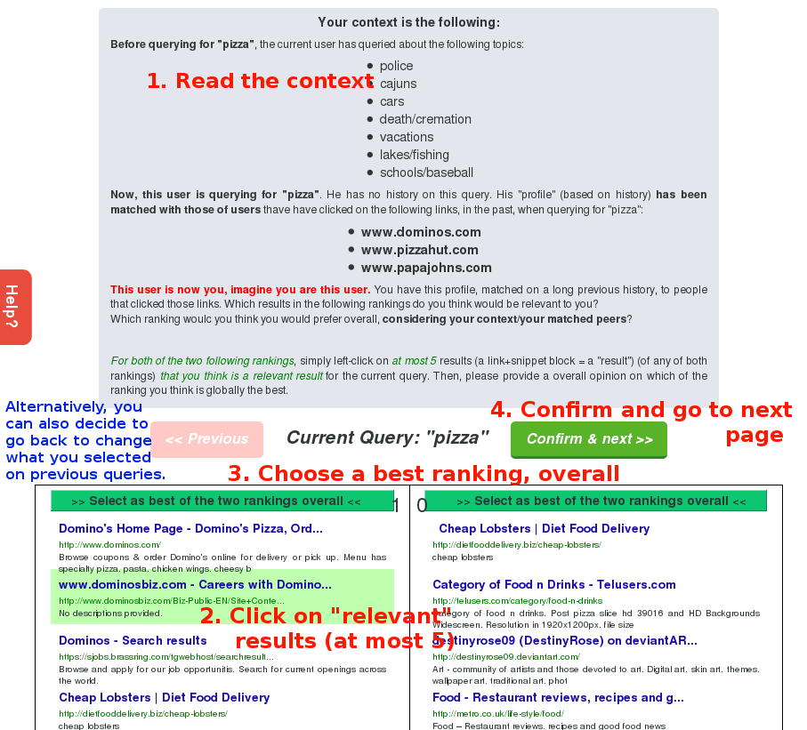

This user study is for you to select “top 5 most relevant” (per column/ranking list) results, in accordance to a given context among two presented rankings and also which ranking is the best, overall (left/right).
You can select between 0 and 5 results (per column!). You do not necessarily need to select 5. If you want to select more than 5, keep the best (in your opinion) 5 ones.
There are only 5 queries, so do not hesitate to clicks on links (blue titles / green urls) and make sure about what you think is best.
A “Help” button will be on the left, to bring back this modal window in case you need.
Left/Right rankings are randomly swapped at every page reload, so that you cannot be biased by a left/right preference. Do not make assumptions about wheter the left or right side is better, it is going to change.
This is not Google: Results might seem a little bit “crap” sometimes in comparison with Google. Those queries were matched against a focused/small crawl of the WWW and this is not Google, the results are as good as the web repository can be.
In a nutshell, here’s the GUI and what you have to do on it: 
>> ENOUGH READING, LET’S GO! <<
Welcome to the CPPR User Study.
The goal of this study is to provide a user-based relevance measurement to a pre-selected set of rankings.
Based on the results of the user study, I will be able to make conclusion on the performance of the algorithm that I have been developing during my Master Thesis: Collaborative(ly) Personalized PageRank.
During the user study, every “user” will be presented with the same sequence of rankings. These rankings have a context. This context is basically clicks/navigation of users similar to the “current user” (similar = similar user profile). These are used in an attempt to re-rank the SERP (Search Engine Result Page) results to be more tailored to the “current user” profile, using information from similar users.
Your mission, if you accept it, is to imagine you are this user, the context is often quite short: Only a couple of links are taken into account (due to several layers of intersections), simply try to imagine, if you had clicked on such links, what would you be looking for.
Based on this, you can then select at most 5 results (per column!) that are relevant. There can be less than 5, but not more than 5 (the UI won’t allow more than 5 selected results).
If you really think none of the results are relevant, you can select none of them, a confirmation will however be asked, to be sure you did not just forget to select them.
Amongst those two rankings, one of them is using the “standard” PageRank algorithm. The other one has been computed using personalized weights extracted based on the context of users similars to him/her.
You will not know which ranking is personalized or not (although you might guess). And the rankings will randomly be swapped sides for every query that you see. So, please do not make any assumptions on whether one side is better than the other one because they are randomly swapped.
A relevancy judgment is just: You consider that this result (a link/snippet) is relevant to the query that is being presented and with the current context (the context is important).
You simply have to left-click a result to mark it as relevant. It will turn green. If you misclicked, simply click again on the same result to toggle its relevant/irrelevant state.
You can select between 0 and 5 relevant results (per column!). If more than 5 results are relevant in your opinion, select the 5 most relevant ones for left/right columns. If less than 5 results are relevant in your opinion, just select the ones you think are relevant and validate as is.
The last thing that will be asked to you is to provide, for every query/context, your overall preference towards one ranking or the other.
This time, you have to choose, you cannot select both. Simply select the one that in your opinion globally answers the best the query / context. Rankings should never be exactly similar so you should not have to make non-sense choices.
This help page is a little bit too short to explain in details. If you feel you need more details to do the user query, then please contact me (see at the bottom) but that should not be needed.
Just shoot me an email and I will be happy sending my Master Thesis to you in its current state or when it’s finalized :) Be warned: That’s quite a bunch of pages.